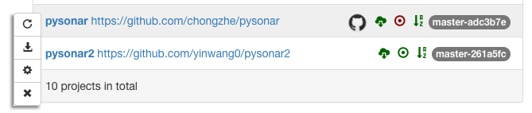
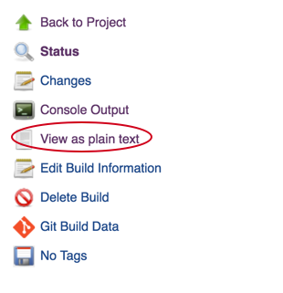

Codatlas New User Guide¶
This chapter is intended to go through the basics of how to use Insight.io. For the rest of the chapter, $HostName refers to the public DNS address that has Insight.io installed. For example if you using AWS $HostName could be http://ec2-52-35-135-191.us-west-2.compute.amazonaws.com
Config to use LDAP¶
Insight.io can use LDAP for authentication with some simple configuration. You can configure these options in lambdalan-enterprise.conf and uncomment the ldap section, as shown below:
Alternatively, you can also setup the LDAP config in $HOSTNAME/projects/admin, the config set in the webpage will be stored in the databse and overwrite the one in config file.
Note that as long as Provider URL property is non-empty, LDAP log in will be enabled and normal username/password login will be disabled.
If your company’s LDAP is using a self-signed CA, Insight.io will need to add the certificate into it’s JVM truststore to enable SSL authentication. To do this, simply put the certificate the following folder:
lambdalab-docker/certs
This folder will be mounted into Insight.io container and all the certificate within will be added into Insight.io trustore.
Create an Account¶
You can create an account at
http://$HostName/signup
The account can either be created with an email and a password, or directly by login with Github account if the admin has setup Github integration.
Note that the first account that is created will be granted admin access.
Add Repository¶
If you are using Github integration with Insight.io and logged in with your Github account, simply go to
http://$HostName/myprojects
Click on Authorize Github Public/Private Repo Access buttons to grant Insight.io access to the public/private repos under your Github account respectively, after which all your repos should be listed under Repositories. Click on the Import this repo switch for the ones you want to import. This will kick-off the code analysis process.
If you are not using Github integration, log in with the account with admin access, and go to:
http://$HostName/admin/projects
Put the git clone address (e.g. https://github.com/apache/hadoop.git) into Enter url here text box and click on “Submit”. You will see the repo showing up in All projects list.
Use Gitlab Plugin¶
Install and Config Native Gitlab Plugin¶
If you are self-hosting Gitlab, Codatlas also provides a native Gitlab Plugin that could add cross-reference to Gitlab page without the requirement of every user to install a Chrome Plugin. The installation requires the administrator having direct access to Gitlab deployment.
First, download the plugin by
git clone https://github.com/lambdalab/plugin.git
The repository only contains two javascript files, put the js files under
$GITLAB_DIR/public/assets/insightio
where $GITLAB_DIR is your gitlab installation folder. For example for an ubnuntu Omnibus release, the folder path could look like:
/opt/gitlab/embedded/service/gitlab-rails.
Then in your $GITLAB_DIR/app/views/layouts/_head.html.haml, add following line
= javascript_include_tag '/assets/insightio/plugin.js'
after
= javascript_include_tag "application".
Finally, we need to config the plugin to work correctly with your Gitlab and Codatas installation.
Open $GITLAB_DIR/public/assets/insightio/plugin.js and make change to the configuration section:
lambdalabConfig = {
url: "http://localhost:9000",
externalUrl: "https://insight.io",
enablePlugin: true
}
url: the URL of your on-prem Codatlas instance
externalUrl: The fall-back server the plugin will be used to resolve a node that is not found within your on-prem instance. For example the definition of java.lang.String may not be found on your on-prem Codatlas instance but will be resolved on insight.io. Set this to empty if you want to disable this feature
enablePlugin: Whether you want to enable the plugin by default. When set to false, users have to explicitly attach enablePlugin=true query parameter in the URL to enable the plugin. When set to true, the plugin is always enabled for all users.
You could see a demo deployment here.
Change settings.xml for Maven project¶
Sometimes you may be using your own Maven Central server to either speed up dependency download or host your own jars in your enterprise network, and usually this custom Maven Central server address is specified in settings.xml file.
In order to make user-specified settings.xml visible to Codatlas’s docker container, you need to mount the file into the container. To do that, open docker-compose.yml (or cn-docker-compose.yml if you use cn-lambda-compose to start the stack) with a text editor, and add the following line under services:tools:volumes section:
$PATH_TO_SETTINGS.xml:/lambda_home/tools/maven/conf/settings.xml
where $PATH_TO_SETTINGS.xml is the absolute path to the settings.xml you want Codatlas to use.
After the change is applied, refresh docker stack by:
./lambda-compose up -d
Customize Repository Build¶
Codatlas is designed to automatically detect build system used for the repository and run default command such as mvn package or gradle build to kick off the build steps, which should work well for most of the repositories. However in cases such as when the project need to download some dependencies up-front, or when some custom build steps, Codatlas provided config settings to customize build steps.
To enter the project config page, login with an admin account, go to Admin Console, hover on the project item and click on the config icon, as shown below.
There are 3 sections of the build config, namely Checkout, Dependencies and Build. Checkout section will be triggered after the repository is cloned, this section is designed for tasks such as checkout a sub-repo. Dependencies section will be run before the build steps are run, this section is designed for downloading dependencies that are not covered by the build script, such as C++ dependencies or other library usually installed by using apt-get. Build section is designed for control the build steps to replace common ones such as mvn package or gradle build
Obtain Build Log from Jenkins¶
Internally Codatlas uses Jenkins to build your project and relies on the build process to perform code analysis. If you see the project does not have any code refernce, chances are there are some issue with the build process. In order to diagnose the issue, you can open a web browser and open Jenkins to obtain the log:
http://$HostName:8080
Locate the build job on right hand side from Build History list, the name of the job will contain the name of the project. See below image for example.
Click the latest number as shown in the graph. And then click ‘View as plain text’ to get the log file.
